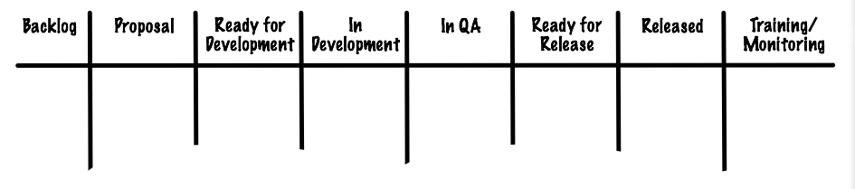
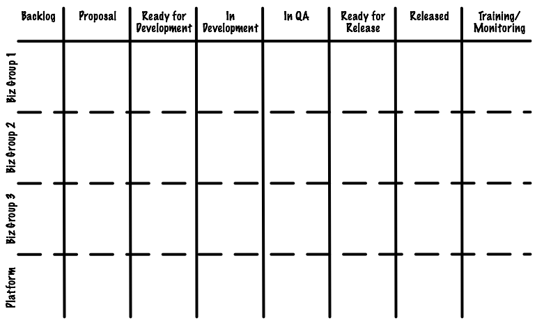
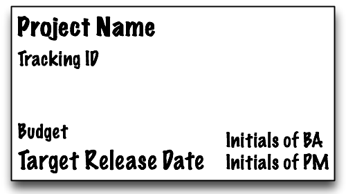
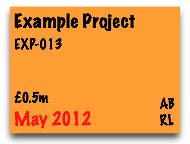

Using Kanban to manage a large portfolio of projects
03 May 2012
I am working in the technology group of a large, multinational financial company. We work with other business groups within the firm to deliver projects varying in size from very small (e.g. a straightforward content update to the company website) to very large (e.g. implementing a set of new features that impact customer operations, security, compliance, etc.).
It’s difficult to understand - especially as a newcomer - everything that we as a group are responsible for. Commonplace questions include:
- how do I know whether a project is in progress or waiting to start?
- which projects are at risk?
- what are we doing next and do we have capacity to do so?
Historically, the team used a Powerpoint template to document project updates, risks, issues and changes to the project pipeline. This is not the optimal way of sharing and communicating this information since it:
- lacks visibility - it is not widely available to everyone the group
- requires effort to interpret - it is difficult to quickly find out whether a project is at risk for example
- lacks detail in key areas - it shows the pipeline as a list but doesn’t identify type, requested by, etc.
Following further discussion with the head of the group, we agreed that setting up a project portfolio board based on some Kanban principles could help address these issues as part of a wider effort to improve our effectiveness at delivering projects.
What we did
Standing in front of an empty whiteboard we answered the following questions:
- What types of work are we asked to do?
- Who asks us to do this work?
- When do we get involved? When do we consider our work done?
- How do we progress this work from start to end?
Work Types
We decided to differentiate work based on 3 project types: i) business-as-usual tasks, ii) small-scale enhancements and iii) larger projects. We manage each type differently (larger products have stricter budgetary contraints compared to business-as-usual tasks for example) so there is benefit in visualising this on the board.
Sources of Work
We agreed that highlighting where work originates was also a useful metric. We narrowed this down to 4 sources: 3 separate business groups and 1 catch-all bucket for requests originating from the technology group itself and/or requests affecting the company as a whole.
Defining the start & end points of the process
We discussed this at length. Should we start with approved projects only or with informal requests for work? Do we consider a project we deploy to production as completed or are there additional steps we need to check?
We decided that our start point is when we find out about an idea for a project exists rather than approved projects. This should allow us to be more adaptive to changes in priorities since a quick approval won’t be a surprise. Our end point is the training and monitoring we need to provide for some projects (note, I initially thought that successfully deploying into production represented a completed project but further discussion amongst the group highlighted this last important step).
What does our process look like?
We iterated through 2 or 3 different versions until we settled on this one (for now - we’ll review how well this is working and revise as appropriate).

- Backlog (queue) - a holding pen for project ideas that require further thought/analysis/sign off
- Proposal (active) - projects in this stage are undergoing analysis or waiting for official sign off to begin
- Ready for Development (queue) - projects here are signed off and ready to pull into development
- In Development (active)
- In QA (active) - projects here are undergoing formal QA
- Ready for Release (queue) - projects waiting to be included in the next release
- Released (completed)
- Training & Monitoring (active)
We didn’t add a buffer between the In Development and In QA stages. We’ll review whether we need in the future.
We added 4 horizontal swimlanes per source of work (see point 2 above) so that we can easily see the distribution of work between each source.

We chose to use different colour cards per work type (see point 1) and opted to capture the following information.

Here’s an example:

What happened next?
Board setup
A quick and easy 10 minute task using a whiteboard (wall space is a premium in this office :-), ruler and marker. Following this, we added 1 card per project into the appropriate column on the board.
Results
A couple of immediate observations: one project manager is responsible for many more projects than other PMs and - unexpectedly - we have no work in progress for one of the business groups and nothing pending in the pipeline.
So, how does this setup help us address the problems I mentioned earlier? The board allows us to quickly see a project’s state by look at the column the card is in. It’s accessible to everyone in the office and is practically self-explanatory. We see all upcoming projects and who’s requested them by looking at the distrubution of cards in the backlog queue. We indicate that a project is at risk by putting a pink sticky note on the card with details of the problem and who owns it. To find out more about a project, you can quickly determine its ID, budget, requesting business group, PM and target release date by looking the corresponding card and position on the board.
We need to do some additional investigation to determine how we use the board to help with capacity planning. We also want to answer these questions:
- how should we inspect/adapt this setup to see what works/doesn’t work (e.g. will adding limits to some stages of the process help)?
- how do we make more use of the board during team meetings?
- how do we make the board visible to our colleagues outside of the main office?
Post by Rhyd Lewis.
Rhyd is an enthusiastic Project Manager with over 10 years’ experience helping teams deliver great software. He enjoys working with clients to help them solve problems by making communication more effective, reducing complexity and delivering quality work as rapidly as possible.